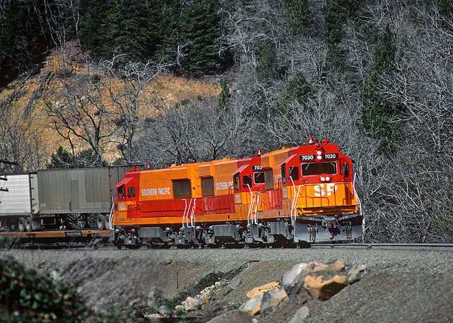

This is a story about adding a little knowledge to the public internet.
A few weeks ago I went looking for information on the Morrison-Knudsen TE70-4S diesel locomotive. It’s an oddball; a rebuild of a General Electric U25B with a Sulzer engine. Only four conversions were done, all for the Southern Pacific Railroad, and they were unsuccessful. There isn’t much information on the internet about them.

Googling turned up a curious reference: Application of Sulzer 12ASV 25/30 Diesel Engines to M-K TE70-4S Locomotives. 12 pages by a J. G. Fearon in 1979 devoted to the subject, published at the time of the conversion. Sounds great. Except…
- This is the only search result for this title
- No one offers this “book” for sale
- No library counts it among its holdings, although it’s in WorldCat
What the hell is this thing?
In the course of researching the Turboliner and the General Electric E60 electric locomotive, I spent some time with industry journals such as Mechanical Engineering, Transportation Research Record, and the various conference proceedings that are published by IEEE. The functional title certainly sounded like a conference paper.
I drew a blank on IEEExplore, but full text has reached 1988 only, with exceptions. Next up was HathiTrust. HathiTrust can be irritating to work with: it doesn’t offer full-text for many things, and when searching journals the results aren’t more specific than the volume, which makes it hard to identify items for inter-library loan.
The first interesting result was for Conference papers index, which reported a hit for 1979. That confirmed my guess (without details) that Fearon, who worked for Morrison-Knudsen, presented on the topic.
The second was a hit for both the author name (common enough) and the locomotive name (very uncommon) in the same volume of Mechanical Engineering. A reel of scrolled microfilm later, and I had an entry in the “Technical Digest” (meeting abstracts) from ASME, and there it was: J. G. Fearon, “Application of Sulzer 12ASV 25/30 Diesel Engines to M-K TE70-4S Locomotives.” Presented at the ASME Energy Technology Conference, November 5-9, 1978. Either it was also issued in pamphlet form, or someone at Google erred. Either way, I was grateful for the pointer.
The next step was requesting the conference proceedings. Time passed. The proceedings arrived and…no joy. Turns out there’s an important difference between the “Petroleum Division” and the “Diesel & Gas Engine Power Division” of the ASME, although both were present at this conference. I’m sure there’s a story. I put in a request for those proceedings and crossed my fingers.
No dice; only one library has those proceedings in that format, and they weren’t giving them up. After various blind alleys I discovered, somehow, that “Paper”, published by the ASME, is a recognized serial by a couple dozen libraries in the United States (ISSN 0402-1215). This serial encompasses all the papers given at ASME conferences throughout the year. You can see this record from Cornell for example of what a nightmare the various ASME codes and numbers are.
The next step was identifying a library which had holdings for DGP from 1978, including paper No. 15. At this point I cheated: I knew someone at a library which held it and was able to bypass the ILL process. I’m pretty confident, however, that an ILL request for that paper and author, specifying the ISSN, year, and paper code, would ultimately have been successful.
The moral of the story is that there’s a wealth of information which, even now, is effectively buried unless you really know where to look. For that unusual Google Books entry, I’m not sure I’d have thought to throw the query at HathiTrust, though I will from now on. Even then, I caught a break that someone had digitized the conference paper index. There are plenty of journals and books which have never been digitized and are undiscoverable via the public internet.